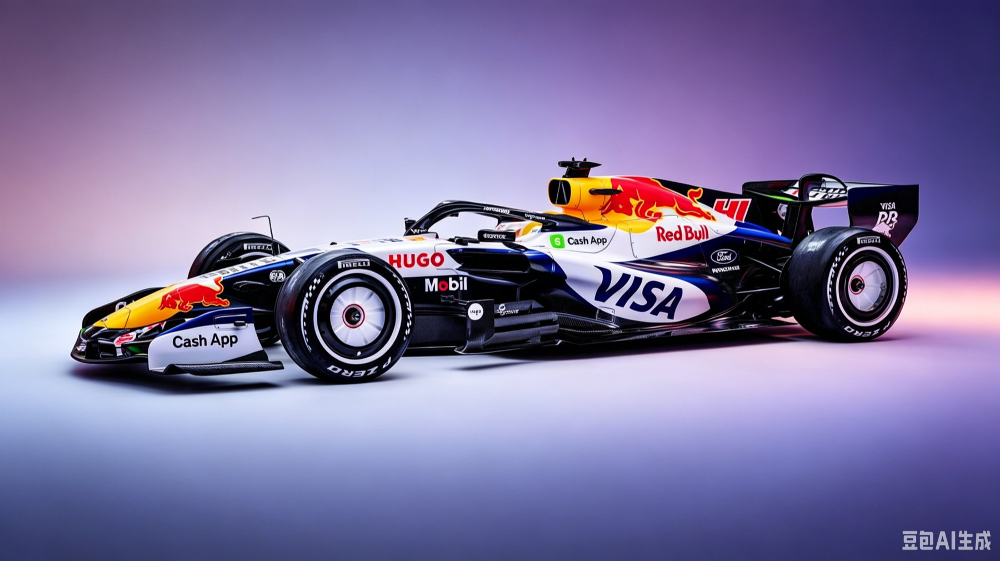

Visa Cash App Racing Bulls
VCARB03
Graphic contrast
at full pace.
VCARB03 是首款搭载 Red Bull-Ford 动力单元的 Racing Bulls 赛车，于 2026 年 1 月 16 日在底特律发布，1 月 20 日在伊莫拉完成首测。 白底蓝纹涂装配合日本 GP 专属樱花特别版（艺术家 Bisen Aoyagi 设计），是围场最具辨识度的赛车之一。
动力单元与性能
引擎 EngineRed Bull-Ford Powertrains — 1.6L V6 Turbo Hybrid
综合功率 Total Power~750 kW / 1,020 PS (980+ bhp)
变速箱 Gearbox8 速自动 / 中置后驱
0–100 km/h~1.7 秒
极速 Top Speed345+ km/h
燃油 Fuel100% 全可持续高级燃料
底盘与车身
底盘 Chassis碳纤维复合材料单体壳
最低车重 Min Weight768 kg（较前代减重 30 kg）
轴距 Wheelbase3,400 mm（−200 mm）
车宽 / 车高1,900 mm / ~950 mm
悬挂 Suspension前推杆 / 后推杆 / 多连杆下臂解耦（与 RB22 共享概念）
轮胎 TyresPirelli 18 寸（前窄 25 mm / 后窄 30 mm）
技术与运营
冷却系统 Cooling高中央化散热 / 超大"帽檐式"进气箱 / 中空侧箱
主动空力 Active Aero可动前后翼 / 双横向执行器前翼
ERS 能量回收~350 kW / 每圈 ~8.5 MJ（MGU-H 已取消）
车手 DriversLiam Lawson / Arvid Lindblad（新秀 / Red Bull 青训）
特别涂装日本 GP 樱花涂装 / Bisen Aoyagi 设计
扩散器设计小型侧舱开口 / 优先隔离后轮湍流